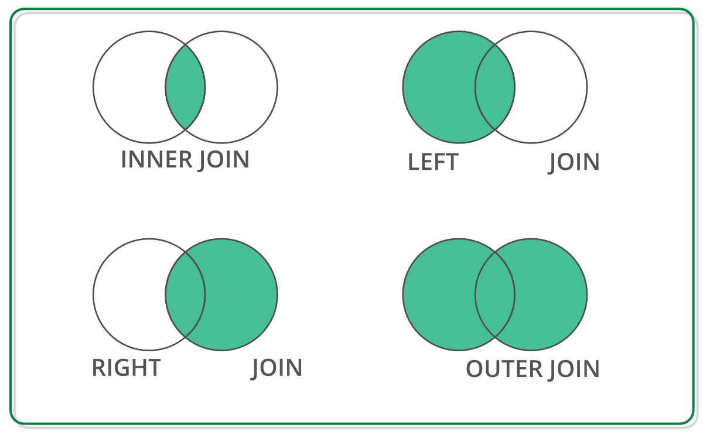

Pandas#
Las Series#
import pandas as pd
#pd.Series?
animales = ['Tigre', 'Oso', 'Alce']
pd.Series(animales)
0 Tigre
1 Oso
2 Alce
dtype: object
animales = ['Tigre', 'Oso', None]
pd.Series(animales)
0 Tigre
1 Oso
2 None
dtype: object
numbers = [1, 2, None]
pd.Series(numbers)
0 1.0
1 2.0
2 NaN
dtype: float64
import numpy as np
np.nan == None
False
np.nan == np.nan
False
np.isnan(np.nan)
True
sports = {'Futbol': 'Ecuador',
'Golf': 'Escocia',
'Sumo': 'Japon',
'Taekwondo': 'Corea del Sur'}
s = pd.Series(sports)
s
Futbol Ecuador
Golf Escocia
Sumo Japon
Taekwondo Corea del Sur
dtype: object
s.index
Index(['Futbol', 'Golf', 'Sumo', 'Taekwondo'], dtype='object')
s = pd.Series(['Tigre', 'Oso', 'Alce'], index=['India', 'America', 'Canada'])
s
India Tigre
America Oso
Canada Alce
dtype: object
sports = {'Futbol': 'Ecuador',
'Golf': 'Escocia',
'Sumo': 'Japon',
'Taekwondo': 'Corea del Sur'}
s = pd.Series(sports, index=['Golf', 'Sumo', 'Hockey'])
s
Golf Escocia
Sumo Japon
Hockey NaN
dtype: object
Haciendo consultas en Series#
sports = {'Futbol': 'Ecuador',
'Golf': 'Escocia',
'Sumo': 'Japon',
'Taekwondo': 'Corea del Sur'}
s = pd.Series(sports)
s
Futbol Ecuador
Golf Escocia
Sumo Japon
Taekwondo Corea del Sur
dtype: object
s.iloc[3]
'Corea del Sur'
s.loc['Golf']
'Escocia'
s[3]
'Corea del Sur'
s['Golf']
'Escocia'
sports = {99: 'Ecuador',
100: 'Escocia',
101: 'Japon',
102: 'Corea del Sur'}
s = pd.Series(sports)
# s[0] # no se hace la consulta
s = pd.Series([100.00, 120.00, 101.00, 3.00])
s
0 100.0
1 120.0
2 101.0
3 3.0
dtype: float64
total = 0
for item in s:
total+=item
print(total)
324.0
s = pd.Series([1, 2, 3])
s.loc['Animal'] = 'Bears' # agregamos un elemento a la serie
s
0 1
1 2
2 3
Animal Bears
dtype: object
Pandas: estructuras de datos para estadística#
Provee estructuras de datos adecuados para análisis estadístico, y añade funciones que facilitan el ingreso de datos, su organización y su manipulación.
Manipulación de datos#
Procedimientos comunes
Un DataFrame es una estructura de datos de dos dimensiones con etiquetas cuyas columnas pueden ser de diferentes tipos.
Empecemos creando un DataFrame con tres columnas Time, x y y
import numpy as np
import pandas as pd
t = np.arange(0,10,0.1)
x = np.sin(t)
y = np.cos(t)
df = pd.DataFrame({'Time':t, 'x':x,'y':y})
En pandas las filas se referencian por índices y las columnas por nombres. Si si desea la primera columna se tiene dos opciones:
df.Time
df['Time']
0 0.0
1 0.1
2 0.2
3 0.3
4 0.4
...
95 9.5
96 9.6
97 9.7
98 9.8
99 9.9
Name: Time, Length: 100, dtype: float64
Si se desea extraer más de una columna, se lo hace con una lista:
data = df[['Time','x']]
Para despleguar las primeras o últimas filas tenemos:
data.head()
data.tail()
| Time | x | |
|---|---|---|
| 95 | 9.5 | -0.075151 |
| 96 | 9.6 | -0.174327 |
| 97 | 9.7 | -0.271761 |
| 98 | 9.8 | -0.366479 |
| 99 | 9.9 | -0.457536 |
Para extraer las filas de la 5 a la 10 tenemos:
data[4:10]
| Time | x | |
|---|---|---|
| 4 | 0.4 | 0.389418 |
| 5 | 0.5 | 0.479426 |
| 6 | 0.6 | 0.564642 |
| 7 | 0.7 | 0.644218 |
| 8 | 0.8 | 0.717356 |
| 9 | 0.9 | 0.783327 |
El manejo de DataFrames es un tanto diferente de arrays en numpy. Por ejemplo, filas (enumeradas) y columnas (etiquetadas) se acceden de forma simultánea de la siguiente manera:
df[['Time','y']][4:10]
| Time | y | |
|---|---|---|
| 4 | 0.4 | 0.921061 |
| 5 | 0.5 | 0.877583 |
| 6 | 0.6 | 0.825336 |
| 7 | 0.7 | 0.764842 |
| 8 | 0.8 | 0.696707 |
| 9 | 0.9 | 0.621610 |
También se puede usar la manera estándar de fila/columna usando iloc:
df.iloc[4:10,[0,2]]
| Time | y | |
|---|---|---|
| 4 | 0.4 | 0.921061 |
| 5 | 0.5 | 0.877583 |
| 6 | 0.6 | 0.825336 |
| 7 | 0.7 | 0.764842 |
| 8 | 0.8 | 0.696707 |
| 9 | 0.9 | 0.621610 |
Finalmente, a veces se desea tener acceso directo a los datos, no al DataFrame, se usa:
# df.values
Lo que devuelve un numpy array
Notas en Selección de datos
Es cierto que DataFrames y arrays son parecidos, pero sus filosofías son diferentes. Es bueno tener muy claro sus diferencias para acceder a los datos:
numpy: maneja filas primero. Ej.,
data[0]es la primera fila del arraypandas: empieza con columnas. Ej.,
df['values'][0]es el primer elemento de la columna values.
Si un DataFrame tiene filas con etiquetas, puedes por ejemplo extraer la fila rowlabel con df.loc['rowlabel']. Si quieres acceder con el número de la fila, se hace con df.iloc[15]. También puedes usar iloc para acceder a datos en formato fila/columna df.ioc[2:4,3]
Extraer filas también funciona, por ejemplo df[0:5] para las primeras 5 filas. Lo que suele ser confuso es que para extraer una única fila se usa por ejmeplo df[5:6]. Si usas solo df[5] se devuelve un error.
Agrupaciones#
pandas ofrece funciones poderosas para manejar datos perdidos que suelen ser reemplazados por nan (not a number). También permite realizar manipilaciones más sofisticadas como pivotaje. Por ejemplo, se puede usar DataFrames para hacer grupos y su análisis estadístico de cada grupo.
Veamos este ejemplo de datos del número de horas que la gente ve televisión agrupado por m y f.
import pandas as pd
import numpy as np
data = pd.DataFrame({
'Gender' : ['f', 'f', 'm', 'f', 'm','m', 'f', 'm', 'f', 'm', 'm'],
'TV': [3.4, 3.5, 2.6, 4.7, 4.1, 4.1, 5.1, 3.9, 3.7, 2.1, 4.3]
})
data
| Gender | TV | |
|---|---|---|
| 0 | f | 3.4 |
| 1 | f | 3.5 |
| 2 | m | 2.6 |
| 3 | f | 4.7 |
| 4 | m | 4.1 |
| 5 | m | 4.1 |
| 6 | f | 5.1 |
| 7 | m | 3.9 |
| 8 | f | 3.7 |
| 9 | m | 2.1 |
| 10 | m | 4.3 |
#Agrupamos los datos
grouped = data.groupby('Gender')
grouped.apply(print)
Gender TV
0 f 3.4
1 f 3.5
3 f 4.7
6 f 5.1
8 f 3.7
Gender TV
2 m 2.6
4 m 4.1
5 m 4.1
7 m 3.9
9 m 2.1
10 m 4.3
# Algunas estadísticas generales
grouped.describe()
| TV | ||||||||
|---|---|---|---|---|---|---|---|---|
| count | mean | std | min | 25% | 50% | 75% | max | |
| Gender | ||||||||
| f | 5.0 | 4.080000 | 0.769415 | 3.4 | 3.500 | 3.7 | 4.7 | 5.1 |
| m | 6.0 | 3.516667 | 0.926103 | 2.1 | 2.925 | 4.0 | 4.1 | 4.3 |
# Graficamos los datos
grouped.plot()
Gender
f AxesSubplot(0.125,0.125;0.775x0.755)
m AxesSubplot(0.125,0.125;0.775x0.755)
dtype: object
# Separamos los grupos como DataFrames
df_female = grouped.get_group('f')
df_female
| Gender | TV | |
|---|---|---|
| 0 | f | 3.4 |
| 1 | f | 3.5 |
| 3 | f | 4.7 |
| 6 | f | 5.1 |
| 8 | f | 3.7 |
# Obtenemos los datos como un numpy-array
values_female = df_female.values
values_female
array([['f', 3.4],
['f', 3.5],
['f', 4.7],
['f', 5.1],
['f', 3.7]], dtype=object)
Merge#
import pandas as pd
df = pd.DataFrame([{'Name': 'Chris', 'Item Purchased': 'Sponge', 'Cost': 22.50},
{'Name': 'Kevyn', 'Item Purchased': 'Kitty Litter', 'Cost': 2.50},
{'Name': 'Filip', 'Item Purchased': 'Spoon', 'Cost': 5.00}],
index=['Store 1', 'Store 1', 'Store 2'])
df
| Name | Item Purchased | Cost | |
|---|---|---|---|
| Store 1 | Chris | Sponge | 22.5 |
| Store 1 | Kevyn | Kitty Litter | 2.5 |
| Store 2 | Filip | Spoon | 5.0 |
df['Date'] = ['December 1', 'January 1', 'mid-May']
df
| Name | Item Purchased | Cost | Date | |
|---|---|---|---|---|
| Store 1 | Chris | Sponge | 22.5 | December 1 |
| Store 1 | Kevyn | Kitty Litter | 2.5 | January 1 |
| Store 2 | Filip | Spoon | 5.0 | mid-May |
df['Delivered'] = True
df
| Name | Item Purchased | Cost | Date | Delivered | |
|---|---|---|---|---|---|
| Store 1 | Chris | Sponge | 22.5 | December 1 | True |
| Store 1 | Kevyn | Kitty Litter | 2.5 | January 1 | True |
| Store 2 | Filip | Spoon | 5.0 | mid-May | True |
df['Feedback'] = ['Positive', None, 'Negative']
df
| Name | Item Purchased | Cost | Date | Delivered | Feedback | |
|---|---|---|---|---|---|---|
| Store 1 | Chris | Sponge | 22.5 | December 1 | True | Positive |
| Store 1 | Kevyn | Kitty Litter | 2.5 | January 1 | True | None |
| Store 2 | Filip | Spoon | 5.0 | mid-May | True | Negative |
adf = df.reset_index()
adf['Date'] = pd.Series({0: 'December 1', 2: 'mid-May'})
adf
| index | Name | Item Purchased | Cost | Date | Delivered | Feedback | |
|---|---|---|---|---|---|---|---|
| 0 | Store 1 | Chris | Sponge | 22.5 | December 1 | True | Positive |
| 1 | Store 1 | Kevyn | Kitty Litter | 2.5 | NaN | True | None |
| 2 | Store 2 | Filip | Spoon | 5.0 | mid-May | True | Negative |
staff_df = pd.DataFrame([{'Name': 'Kelly', 'Role': 'Director of HR'},
{'Name': 'Sally', 'Role': 'Course liasion'},
{'Name': 'James', 'Role': 'Grader'}])
staff_df = staff_df.set_index('Name')
student_df = pd.DataFrame([{'Name': 'James', 'School': 'Business'},
{'Name': 'Mike', 'School': 'Law'},
{'Name': 'Sally', 'School': 'Engineering'}])
student_df = student_df.set_index('Name')
print(staff_df.head())
print()
print(student_df.head())
Role
Name
Kelly Director of HR
Sally Course liasion
James Grader
School
Name
James Business
Mike Law
Sally Engineering
Tipos de join
{kind=link}
pd.merge(staff_df, student_df, how='outer', left_index=True, right_index=True)
| Role | School | |
|---|---|---|
| Name | ||
| James | Grader | Business |
| Kelly | Director of HR | NaN |
| Mike | NaN | Law |
| Sally | Course liasion | Engineering |
pd.merge(staff_df, student_df, how='inner', left_index=True, right_index=True)
| Role | School | |
|---|---|---|
| Name | ||
| Sally | Course liasion | Engineering |
| James | Grader | Business |
pd.merge(staff_df, student_df, how='left', left_index=True, right_index=True)
| Role | School | |
|---|---|---|
| Name | ||
| Kelly | Director of HR | NaN |
| Sally | Course liasion | Engineering |
| James | Grader | Business |
pd.merge(staff_df, student_df, how='right', left_index=True, right_index=True)
| Role | School | |
|---|---|---|
| Name | ||
| James | Grader | Business |
| Mike | NaN | Law |
| Sally | Course liasion | Engineering |
staff_df = staff_df.reset_index()
student_df = student_df.reset_index()
pd.merge(staff_df, student_df, how='left', left_on='Name', right_on='Name')
| Name | Role | School | |
|---|---|---|---|
| 0 | Kelly | Director of HR | NaN |
| 1 | Sally | Course liasion | Engineering |
| 2 | James | Grader | Business |
staff_df = pd.DataFrame([{'Name': 'Kelly', 'Role': 'Director of HR', 'Location': 'State Street'},
{'Name': 'Sally', 'Role': 'Course liasion', 'Location': 'Washington Avenue'},
{'Name': 'James', 'Role': 'Grader', 'Location': 'Washington Avenue'}])
student_df = pd.DataFrame([{'Name': 'James', 'School': 'Business', 'Location': '1024 Billiard Avenue'},
{'Name': 'Mike', 'School': 'Law', 'Location': 'Fraternity House #22'},
{'Name': 'Sally', 'School': 'Engineering', 'Location': '512 Wilson Crescent'}])
pd.merge(staff_df, student_df, how='left', left_on='Name', right_on='Name')
| Name | Role | Location_x | School | Location_y | |
|---|---|---|---|---|---|
| 0 | Kelly | Director of HR | State Street | NaN | NaN |
| 1 | Sally | Course liasion | Washington Avenue | Engineering | 512 Wilson Crescent |
| 2 | James | Grader | Washington Avenue | Business | 1024 Billiard Avenue |
staff_df = pd.DataFrame([{'First Name': 'Kelly', 'Last Name': 'Desjardins', 'Role': 'Director of HR'},
{'First Name': 'Sally', 'Last Name': 'Brooks', 'Role': 'Course liasion'},
{'First Name': 'James', 'Last Name': 'Wilde', 'Role': 'Grader'}])
student_df = pd.DataFrame([{'First Name': 'James', 'Last Name': 'Hammond', 'School': 'Business'},
{'First Name': 'Mike', 'Last Name': 'Smith', 'School': 'Law'},
{'First Name': 'Sally', 'Last Name': 'Brooks', 'School': 'Engineering'}])
staff_df
student_df
pd.merge(staff_df, student_df, how='inner', left_on=['First Name','Last Name'], right_on=['First Name','Last Name'])
| First Name | Last Name | Role | School | |
|---|---|---|---|---|
| 0 | Sally | Brooks | Course liasion | Engineering |
Datos categóricos#
df = pd.DataFrame(['A+', 'A', 'A-', 'B+', 'B', 'B-', 'C+', 'C', 'C-', 'D+', 'D'],
index=['excellent', 'excellent', 'excellent', 'good', 'good', 'good', 'ok', 'ok', 'ok', 'poor', 'poor'])
df.rename(columns={0: 'Grades'}, inplace=True)
df
| Grades | |
|---|---|
| excellent | A+ |
| excellent | A |
| excellent | A- |
| good | B+ |
| good | B |
| good | B- |
| ok | C+ |
| ok | C |
| ok | C- |
| poor | D+ |
| poor | D |
df['Grades'].astype('category').head()
excellent A+
excellent A
excellent A-
good B+
good B
Name: Grades, dtype: category
Categories (11, object): ['A', 'A+', 'A-', 'B', ..., 'C+', 'C-', 'D', 'D+']
grades = pd.Categorical(df.Grades, categories=['D', 'D+', 'C-', 'C', 'C+', 'B-', 'B', 'B+', 'A-', 'A', 'A+'],
ordered=True)
grades
['A+', 'A', 'A-', 'B+', 'B', ..., 'C+', 'C', 'C-', 'D+', 'D']
Length: 11
Categories (11, object): ['D' < 'D+' < 'C-' < 'C' ... 'B+' < 'A-' < 'A' < 'A+']
grades > 'C'
array([ True, True, True, True, True, True, True, False, False,
False, False])
#import os as os
#os.chdir("C:/Users/VICTOR/Documents/AnalyticsPython/Data")
df = pd.read_csv('Data/census.csv')
df = df[df['SUMLEV']==50]
df = df.set_index('STNAME').groupby(level=0)['CENSUS2010POP'].agg([np.average]).rename(columns={'average': 'avg'})
pd.cut(df['avg'],10)
STNAME
Alabama (11706.087, 75333.413]
Alaska (11706.087, 75333.413]
Arizona (390320.176, 453317.529]
Arkansas (11706.087, 75333.413]
California (579312.234, 642309.586]
Colorado (75333.413, 138330.766]
Connecticut (390320.176, 453317.529]
Delaware (264325.471, 327322.823]
District of Columbia (579312.234, 642309.586]
Florida (264325.471, 327322.823]
Georgia (11706.087, 75333.413]
Hawaii (264325.471, 327322.823]
Idaho (11706.087, 75333.413]
Illinois (75333.413, 138330.766]
Indiana (11706.087, 75333.413]
Iowa (11706.087, 75333.413]
Kansas (11706.087, 75333.413]
Kentucky (11706.087, 75333.413]
Louisiana (11706.087, 75333.413]
Maine (75333.413, 138330.766]
Maryland (201328.118, 264325.471]
Massachusetts (453317.529, 516314.881]
Michigan (75333.413, 138330.766]
Minnesota (11706.087, 75333.413]
Mississippi (11706.087, 75333.413]
Missouri (11706.087, 75333.413]
Montana (11706.087, 75333.413]
Nebraska (11706.087, 75333.413]
Nevada (138330.766, 201328.118]
New Hampshire (75333.413, 138330.766]
New Jersey (390320.176, 453317.529]
New Mexico (11706.087, 75333.413]
New York (264325.471, 327322.823]
North Carolina (75333.413, 138330.766]
North Dakota (11706.087, 75333.413]
Ohio (75333.413, 138330.766]
Oklahoma (11706.087, 75333.413]
Oregon (75333.413, 138330.766]
Pennsylvania (138330.766, 201328.118]
Rhode Island (201328.118, 264325.471]
South Carolina (75333.413, 138330.766]
South Dakota (11706.087, 75333.413]
Tennessee (11706.087, 75333.413]
Texas (75333.413, 138330.766]
Utah (75333.413, 138330.766]
Vermont (11706.087, 75333.413]
Virginia (11706.087, 75333.413]
Washington (138330.766, 201328.118]
West Virginia (11706.087, 75333.413]
Wisconsin (75333.413, 138330.766]
Wyoming (11706.087, 75333.413]
Name: avg, dtype: category
Categories (10, interval[float64, right]): [(11706.087, 75333.413] < (75333.413, 138330.766] < (138330.766, 201328.118] < (201328.118, 264325.471] ... (390320.176, 453317.529] < (453317.529, 516314.881] < (516314.881, 579312.234] < (579312.234, 642309.586]]
Tablas dinámicas#
df = pd.read_csv('Data/cars.csv')
df.head()
| YEAR | Make | Model | Size | (kW) | Unnamed: 5 | TYPE | CITY (kWh/100 km) | HWY (kWh/100 km) | COMB (kWh/100 km) | CITY (Le/100 km) | HWY (Le/100 km) | COMB (Le/100 km) | (g/km) | RATING | (km) | TIME (h) | |
|---|---|---|---|---|---|---|---|---|---|---|---|---|---|---|---|---|---|
| 0 | 2012 | MITSUBISHI | i-MiEV | SUBCOMPACT | 49 | A1 | B | 16.9 | 21.4 | 18.7 | 1.9 | 2.4 | 2.1 | 0 | NaN | 100 | 7 |
| 1 | 2012 | NISSAN | LEAF | MID-SIZE | 80 | A1 | B | 19.3 | 23.0 | 21.1 | 2.2 | 2.6 | 2.4 | 0 | NaN | 117 | 7 |
| 2 | 2013 | FORD | FOCUS ELECTRIC | COMPACT | 107 | A1 | B | 19.0 | 21.1 | 20.0 | 2.1 | 2.4 | 2.2 | 0 | NaN | 122 | 4 |
| 3 | 2013 | MITSUBISHI | i-MiEV | SUBCOMPACT | 49 | A1 | B | 16.9 | 21.4 | 18.7 | 1.9 | 2.4 | 2.1 | 0 | NaN | 100 | 7 |
| 4 | 2013 | NISSAN | LEAF | MID-SIZE | 80 | A1 | B | 19.3 | 23.0 | 21.1 | 2.2 | 2.6 | 2.4 | 0 | NaN | 117 | 7 |
df.pivot_table(values='(kW)', index='YEAR', columns='Make', aggfunc=np.mean)
| Make | BMW | CHEVROLET | FORD | KIA | MITSUBISHI | NISSAN | SMART | TESLA |
|---|---|---|---|---|---|---|---|---|
| YEAR | ||||||||
| 2012 | NaN | NaN | NaN | NaN | 49.0 | 80.0 | NaN | NaN |
| 2013 | NaN | NaN | 107.0 | NaN | 49.0 | 80.0 | 35.0 | 280.000000 |
| 2014 | NaN | 104.0 | 107.0 | NaN | 49.0 | 80.0 | 35.0 | 268.333333 |
| 2015 | 125.0 | 104.0 | 107.0 | 81.0 | 49.0 | 80.0 | 35.0 | 320.666667 |
| 2016 | 125.0 | 104.0 | 107.0 | 81.0 | 49.0 | 80.0 | 35.0 | 409.700000 |
df.pivot_table(values='(kW)', index='YEAR', columns='Make', aggfunc=[np.mean,np.min], margins=True)
| mean | amin | |||||||||||||||||
|---|---|---|---|---|---|---|---|---|---|---|---|---|---|---|---|---|---|---|
| Make | BMW | CHEVROLET | FORD | KIA | MITSUBISHI | NISSAN | SMART | TESLA | All | BMW | CHEVROLET | FORD | KIA | MITSUBISHI | NISSAN | SMART | TESLA | All |
| YEAR | ||||||||||||||||||
| 2012 | NaN | NaN | NaN | NaN | 49.0 | 80.0 | NaN | NaN | 64.500000 | NaN | NaN | NaN | NaN | 49.0 | 80.0 | NaN | NaN | 49 |
| 2013 | NaN | NaN | 107.0 | NaN | 49.0 | 80.0 | 35.0 | 280.000000 | 158.444444 | NaN | NaN | 107.0 | NaN | 49.0 | 80.0 | 35.0 | 270.0 | 35 |
| 2014 | NaN | 104.0 | 107.0 | NaN | 49.0 | 80.0 | 35.0 | 268.333333 | 135.000000 | NaN | 104.0 | 107.0 | NaN | 49.0 | 80.0 | 35.0 | 225.0 | 35 |
| 2015 | 125.0 | 104.0 | 107.0 | 81.0 | 49.0 | 80.0 | 35.0 | 320.666667 | 181.428571 | 125.0 | 104.0 | 107.0 | 81.0 | 49.0 | 80.0 | 35.0 | 280.0 | 35 |
| 2016 | 125.0 | 104.0 | 107.0 | 81.0 | 49.0 | 80.0 | 35.0 | 409.700000 | 252.263158 | 125.0 | 104.0 | 107.0 | 81.0 | 49.0 | 80.0 | 35.0 | 283.0 | 35 |
| All | 125.0 | 104.0 | 107.0 | 81.0 | 49.0 | 80.0 | 35.0 | 345.478261 | 190.622642 | 125.0 | 104.0 | 107.0 | 81.0 | 49.0 | 80.0 | 35.0 | 225.0 | 35 |